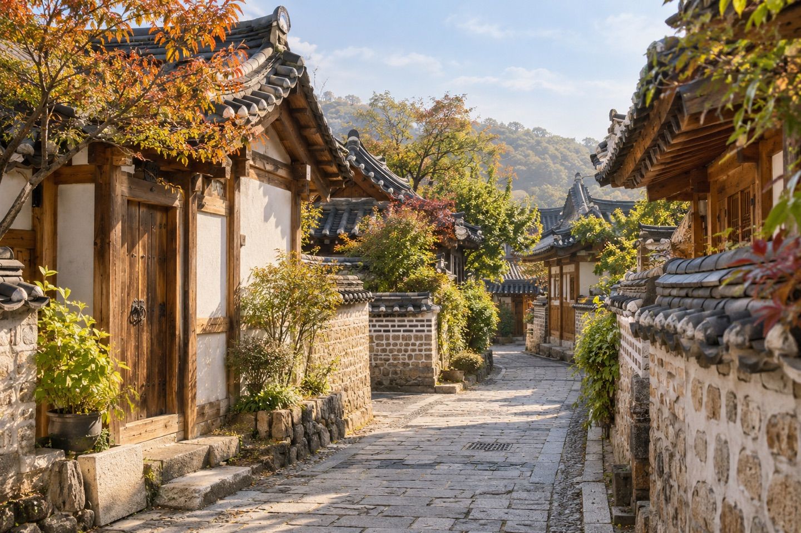

A trip to Korea does not have to stay inside Seoul. Jeonju offers another starting point: a neighborhood of traditional houses, places to explore Korean crafts, and a meal worth making time for. This is a planning guide, rather than a personal visit diary.
Look up, then slow down.
Jeonju Hanok Village sits in the Pungnam-dong and Gyo-dong area. The city’s official introduction describes a district with more than 700 hanok houses, alongside cultural sites such as Gyeonggijeon, Omokdae and Jeonju Hyanggyo.
For a first walk, pay attention to a few small things: the curve of a tiled roof, the meeting of wood and plaster, or the pattern in a gate. Looking at one detail carefully can be more rewarding than collecting a long list of stops.
As a tattoo artist, I am interested in the way a line moves and how a composition holds together. Rooflines offer a useful subject for looking and sketching: follow a curve, notice the empty space beneath it, then see how neighboring shapes change the rhythm.
The official village website also lists traditional craft activities, hanbok experiences and cultural facilities. Pick something that matches your interests, and check its current arrangements before including it in your day. Respect private entrances and ask before photographing people.
Village introduction — Jeonju City ↗Leave time for a bowl of bibimbap.
Jeonju bibimbap is one of the city’s best-known foods. The Korea Tourism Organization describes its combination of rice and varied toppings, and notes that restaurants serving it can be found around the Hanok Village.
Use the meal as a chance to notice color and texture as well as flavor. Read the menu first, ask what comes with the bowl, and check the ingredients if you have dietary requirements. Toppings, broth and sauces differ between restaurants; the appearance of vegetables alone does not establish that a dish is vegetarian.
If you prefer less spice, ask whether the sauce can be served separately. Leave enough time to sit down rather than fitting a meal into the last few minutes before your next stop.
Jeonju bibimbap — Korea Tourism Organization ↗Plan for the walk, not just the destination.
Check the city’s official map to choose a starting point and group nearby stops. Its arrival information includes directions from Jeonju Station. Confirm the current route and departure information for your travel date rather than relying on an old timetable.
Wear shoes you are happy to walk in. Bring a layer you can add or remove, and check the forecast before leaving. The autumn mood in the illustration is artistic; it is not today’s weather or a prediction of the foliage you will see.
Individual attractions, workshops and restaurants set their own hours, admission fees and booking terms. Check those directly before travel. This guide does not publish an unverified fare, price or opening schedule.
- Official village map and arrival information ↗
- Visit Jeonju — city tourism information ↗
- Korea Meteorological Administration — current forecast ↗
Official sources reviewed October 7, 2026. Travel notes and illustration by SSAB. The image is AI-generated and does not document a visit.